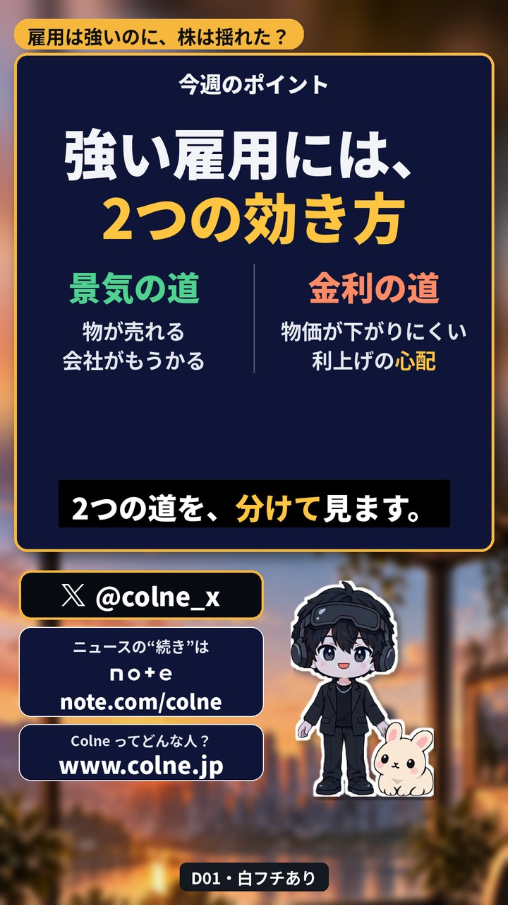
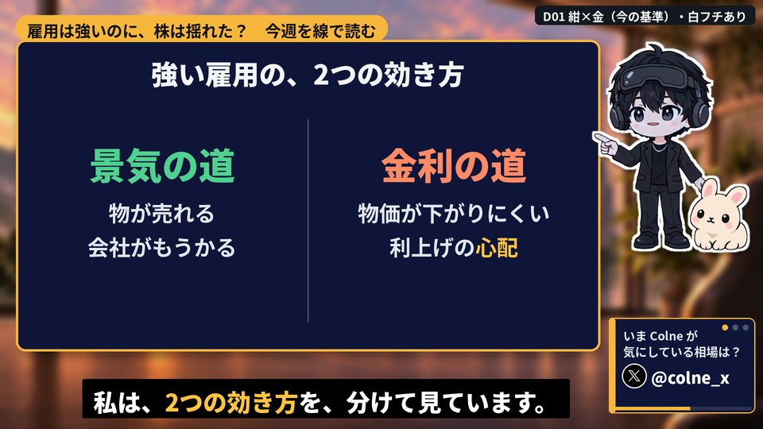
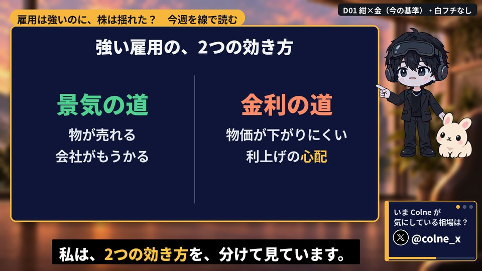

Colne 画面デザイン案
ご確認いただきたいのは次の3点です。上から順に、おすすめを1つずつ載せています。
- スライドの配色（横動画・ショート）
- 右下の案内（X・note・ホームページを切り替えて表示）：暗い版／明るい版
- 背景のぼかし方（冒頭と終わりはくっきり、本編はぼかす）
- BGM（本編・冒頭・終わり・ショート）
- うさちゃんの名前（3案）
- ニュースの見本動画（白背景ベース・横動画とショート）
明るい（白い地の）スライドの案は こちら（1の中）
1. スライドの配色
おすすめ紺×金（白フチあり）
横動画

ショート
- 紺は親しみやすさ、黒は強さの印象を与えます。紺を基調に黒を合わせると、両方を出せるとされています。
- 暗い地の上では、黄色の文字がいちばん読みやすい色です。
- 読みやすい字ほど「内容が正しい」と受け取られやすい、という研究があります。そのため、太いゴシック体で統一しています。
- Colne の周りの白フチ：あると、黒いスーツが明るい背景に沈みません。
出典：DaiGo の心理学の知見（D-Labo）。どれも一般的な心理学の知見で、YouTube の再生数で効果を確かめたものではありません。
白フチあり／なしの比較

白フチあり

白フチなし
横動画：10案
どの案も、左が白フチあり、右が白フチなしです。
ショート：10案
ショートは背景のぼかしを横動画より2段階強くしています。
明るい案（白い地のスライド）
前に作った配色のうち、白い地の15案です。並びと右下の案内（明るい版）は、上の黒ベースの案と同じにしています。番号は前の見本と同じです。05（青い枠・水色の蛍光ペン）は、前回おすすめした案です。赤を多く使う案（01・10・12）は、赤で安っぽく見えやすいという知見があります（D-Labo）。
横動画
ショート
2. 右下の案内（X・note・ホームページ）
3つの案内を1つずつ切り替えて表示します。本番では30秒ごとに切り替えます（見本は4秒ごと）。
おすすめ暗い版（黒×金）：スライドと同じ黒ベースなので、画面になじみます。
明るい版：案内が目立ちますが、黒い画面の中で白い枠が浮きます。
文言：X「いま Colne が気にしている相場は？」／note「ニュースの“続き”は note で」／ホームページ「Colne ってどんな人？」
3. 背景のぼかし方
再生できないときは こちらから動画だけを開く
- 背景は明るい朝焼けです。冒頭は「どうも、Colne です」まで、くっきり見せます。
- その後、約4秒かけて背景をぼかします。本編ではスライドが読みやすくなります。
- 本編が終わり、案内に入る所から、約4秒かけてくっきりに戻します。案内はここから5秒ごとに切り替えます。
- この見本は、冒頭の45秒と最後の37秒をつないだものです。声は語尾まで発音されるように作り直し、速さは1.08倍です。
4. BGM
歌のない、落ち着いたジャズ系の曲です。声と字幕の邪魔をしないよう、テンポはゆったり（約85）、音の数は少なめにしています。種類ごとに2曲ずつ作り、おすすめを1曲選びました。
本編（解説の下でくり返し流す・3分）
おすすめ本編 2：最後まで同じ音量で終わるので、くり返してもつなぎ目が目立ちにくい
本編 1：最後が小さくなって終わるため、くり返すと約3分ごとに音が途切れる
つなぎ目の聞き比べ（3分の終わり→頭に戻る所、10秒＋10秒）
本編 2 のつなぎ目
本編 1 のつなぎ目
冒頭（あいさつまで・12秒）
おすすめ冒頭 1：本編と同じくらいの音量
冒頭 2：小さめで、後半は消えていく
終わり（案内の所・20秒）
おすすめ終わり 1：最後に自然に小さくなって終わる
終わり 2：最後が急に切れる
ショート（45秒）
おすすめショート 1：音が割れる所がなく、最後は自然に終わる
ショート 2：大きい所で6回、音がわずかに割れる
おすすめは、つなぎ目・終わり方・音量・音割れを測って選びました。曲の好みは聞いてお選びください。動画ではBGMを声より十分小さくし、声が出ている間は自動でさらに下げます。
5. うさちゃんの名前（3案）
右がうさちゃん（本名：こはるくん）
投資の世界の縁起の良いことばと組み合わせました。もとにしたのは、干支の相場格言「卯（う）跳ねる」（うさぎの年は相場が跳ねる、という言い伝え）です。
名前の選び方：短く、言いやすく、覚えやすい名前ほど好感を持たれやすいという心理学の知見（D-Labo）に合わせて、4〜5文字にしています。「もうかる」「上がる」と約束しているように聞こえる名前は避けました。
おすすめ
はねはる
跳ね＋こはる（本名）。格言「卯跳ねる」と本名の両方が入る。呼びかけは「はねはるくん」
はねうさ
跳ね＋うさ。いちばん分かりやすく、うさぎのキャラだと一目で伝わる
かぶぴょん
株＋ぴょん。投資のチャンネルらしさと、跳ねる音の親しみやすさ
3案とも、ネットで調べた範囲では同じ名前のキャラクターは見当たりませんでした（商標までは調べていません。正式に決める前に確認します）。
6. ニュースの見本動画（白背景ベース）
11月7日の回（「雇用は強いのに、株は揺れた？」）を、白背景のスライドで作り直した見本です。
- 数字はすべて、元の記事（外為どっとコム・OANDA証券・みんかぶ・時事・共同通信）で確かめ、数字のスライドの右下に出典を入れました。
- グラフは、確かめた数字から作ったものです。人物の写真や記事の画面写真は使っていません。
- 声は、語尾まで発音されるように作り直しました。
- 背景：冒頭と終わりはくっきり、本編はぼかします。ショートは横動画より強くぼかします。
- 右下の案内は、本編では30秒ごとに切り替わります。終わりでは、声が「ホームページ」と言う間はホームページを出し、そのあと X、note の順に切り替わります。
- BGM は 4. のおすすめの曲（冒頭1・本編2・終わり1、ショート1）です。